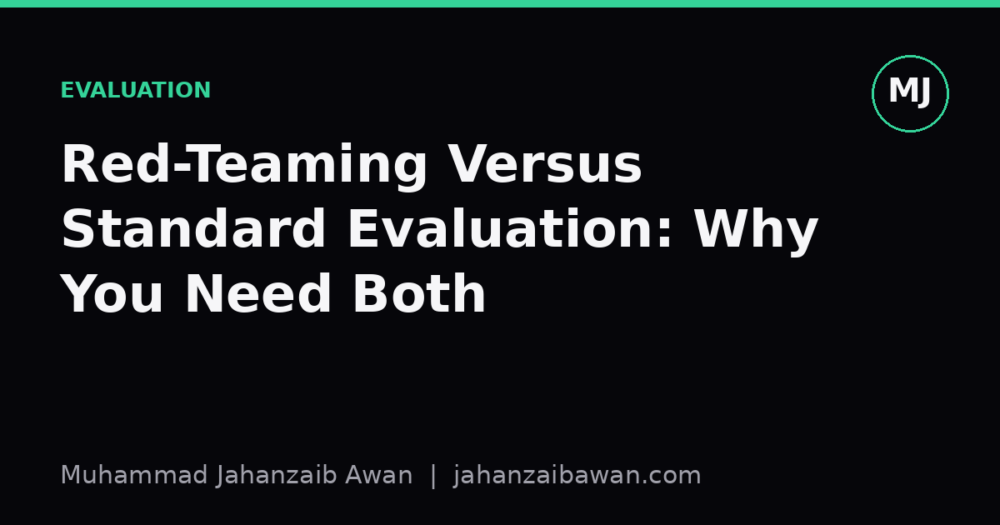

Red-Teaming Versus Standard Evaluation: Why You Need Both
Benchmarks tell you how a model performs on average. Red-teaming tells you how it fails when someone is actually trying to break it. Confusing the two leaves real gaps uncovered.

Two questions that sound alike but aren't
When people say a model has been 'evaluated', they usually mean it was scored against a held-out test set using accuracy, F1, perplexity, or some task-specific metric. This answers a narrow but important question: given inputs drawn from roughly the same distribution as training, how well does the model perform on average? It is a statement about typical behaviour under typical conditions.
Red-teaming asks a different question entirely: can I construct an input, deliberately and adversarially, that makes this model fail in a way that matters? It is not interested in averages. A red team does not care that a model is correct 97 percent of the time if the remaining 3 percent includes a reliable method for extracting private data or bypassing a safety filter. The unit of analysis shifts from distributional performance to worst-case, intentionally engineered failure.
This distinction matters because the two approaches optimise for different things and can point in opposite directions. A model can have excellent benchmark numbers and still be trivially broken by a motivated adversary, because benchmarks are built from naturally occurring or randomly sampled examples, not from examples chosen specifically to find the seams.
A worked example: the content filter that passed every test
Imagine a text classifier built to flag harmful instructions, evaluated on a held-out set of 2,000 labelled examples. It scores 96 percent accuracy and a strong F1 score. By standard evaluation norms, this looks deployable. The test set was drawn independently of training data, there was no leakage, and the split was stratified by label, so the number is trustworthy as a measure of average-case performance on data resembling that distribution.
Now a red team sits down with the explicit goal of causing a false negative. They do not sample randomly; they reason about the model's likely weaknesses. They try paraphrasing harmful requests using euphemism, splitting a request across multiple turns, embedding it inside a fictional frame, or asking the model to respond 'as a character' who is not bound by the same constraints. Within an afternoon they find that wrapping the request in a short story premise drops the detection rate from something like 96 percent to well under 50 percent on their adversarial set.
Nothing about the original evaluation was wrong. The 96 percent figure is still an accurate description of performance on naturally distributed inputs. But it was never designed to answer the question the red team is asking, which is: does a motivated person who knows roughly how this system works have a reliable way to defeat it? Standard evaluation measures the shape of the distribution; red-teaming searches the tail deliberately, and the tail is exactly where deployed systems get exploited.
The important lesson is not that the benchmark was useless, it is that it was being asked to do a job it was never built for. Treating a strong held-out score as evidence of robustness against adversarial use is a category error, not a measurement error.
Why you cannot substitute one for the other
It is tempting to think red-teaming should simply replace standard evaluation, since it finds the failures that matter most. This is a mistake for a few concrete reasons. First, red-teaming is unstructured and effort-bound by design; a red team working for two days will find different, usually fewer, issues than one working for two weeks, and there is no natural stopping point or statistical guarantee of coverage. You cannot compute a confidence interval over adversarial findings the way you can over a held-out metric.
Second, red-teaming without a stable baseline tells you nothing about regression. If a model is retrained next month and a red team finds three new jailbreaks, you have no way of knowing whether the model actually got worse, or whether the red team simply tried harder this time, or whether they focused on a different attack surface. Standard evaluation gives you the repeatable, comparable number that lets you say with some confidence that version two is better or worse than version one on the dimensions that matter for everyday use.
Third, most of what a deployed system does is ordinary, not adversarial. A customer support model answering the same handful of common queries thousands of times a day needs to be reliably good at those common cases far more than it needs to survive a creative jailbreak that almost no real user will ever attempt. Standard evaluation is what tells you whether the ordinary 95 percent of traffic is being served well; red-teaming is what tells you whether the remaining 5 percent, which may include the users with the worst intentions, can cause disproportionate harm.
The two practices also fail differently when done badly. A leaky, poorly constructed benchmark gives you a falsely optimistic number that looks rigorous but is not; a shallow, time-boxed red-teaming exercise gives you false confidence that 'nothing bad was found', which is not the same as 'nothing bad exists'. Neither flaw is visible from the outside unless you know to look for it.
A practical rule of thumb
In practice I treat standard evaluation as the baseline instrument for any claim about typical performance, reliability across subgroups, or comparison between model versions, and I insist on leakage-aware, properly stratified splits before trusting any number that comes out of it. Red-teaming, by contrast, I treat as a targeted, adversary-modelled exercise that should be scoped around a specific threat: what is the worst thing someone could try to make this system do, and who is likely to try it?
You need both when the cost of a rare, deliberately engineered failure is high, which is most systems exposed to the open internet or to adversarial incentives of any kind. You can probably lean more heavily on standard evaluation alone when the deployment context is closed, the users are cooperative, and the consequences of rare failures are mild. The mistake to avoid is letting a strong benchmark score stand in for an answer to the adversarial question, or letting an unstructured red-teaming effort stand in for a repeatable measure of everyday quality. They are answering different questions, and a system is only as safe as the weaker of the two answers you have bothered to collect.